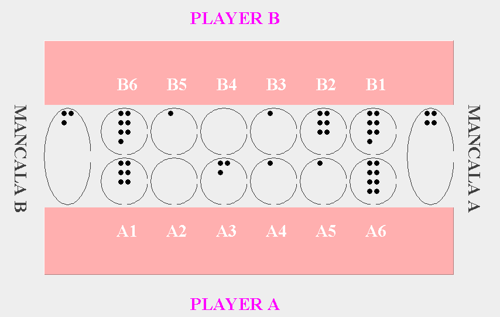

MS Data Science
SJSU
I am a recent graduate from San Jose State University with a strong interest and expertise in algorithms. I have a background in
mathematics and have found that my strengths in logic and problem-solving have translated very well to programming. Below you will
find some of my work, including my master's project. I researched the theory and applications of Gaussian Process Models (GPMs)
and provided an intuitive introduction to this class of models, as well as my findings which could lead to increased usefulness of GPMs.


In this project, my partner and I worked to predict writing quality based on writing process data such as keystroke patterns. We used HMM
and summary statistics to condense the many data elements making up one essay into one data point, then used several regression techniques
to make predictions on a 1 to 6 scoring scale. This was also part of a Kaggle competition, and we placed middle of the pack despite being
limited to the traditional encoding models within the scope of our course.
Bilateral Trade
Flow Prediction

This project built upon previous research that used Graph Convolutional Networks, along with Multi-Layer Perceptron, and several
other regression techniques to predict the total international trade between pairs of nations. The data set included "node" data for each
nation such as GDP, and "edge" data between nations such as whether or not they share languages and religions. I was able to replicate their
model based on the description in the paper and make improvements through simplification and substitution of model components.
Predicting Solar
Radiation
My group worked on a dataset gathered with the intention of predicting the amount of energy future Mars astronauts would be able to collect
through solar panels. To this end, we used several variables such as time of day and temperature to predict the amount of solar radiation
at any given time. We used advanced techniques for traditional regression models such as data transformation, outlier handling, and residual
analysis.

I led a team of four to create a mancala game in Java. I was the primary contributor in planning the project design and handled most of the
backend functionality. The result is a functional mancala game that allows a limited number of undos on each player's turn and follows the
basic rules of mancala.